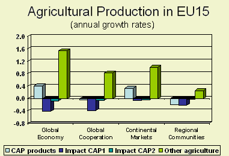

In order to analyze the economic and environmental consequences of economic, policy and demographic changes as well as changes in policies that influence European and global agriculture and land use a framework was developed that combines a macro-economic and an integrated assessment model. |
 |
The global economy is modelled with an extended version of the Computable General Equilibrium (CGlobal Economy) model GTAP (Global Trade Analysis Project), which combines the advantages of the global CGlobal Economy approach, taking into consideration the impact of non-agricultural sectors on agriculture and a full treatment of factor markets, with the specific features of partial equilibrium models concerning land modeling. The standard GTAP model is characterized by an input-output structure based on regional and national input-output tables. It explicitly links industries in a value added chain from primary goods, over continuously higher stages of intermediate processing, to the final assembling of goods and services for consumption. For this analysis an extended version of the standard GTAP model was developed that improved the treatment of agricultural production and land use. Since it was assumed that the various types of land use are imperfectly substitutable, the land use allocation structure was extended by taking into account different degrees of substitutability between land use types. Therefore, OECD’s more detailed Policy Evaluation Model structure was used. It is essential that land supply, which is normally exogenous in CGlobal Economy models, is made endogenous by including a land supply curve since land can move into or out of agricultural production due to several reasons, leading to exceeding or undershooting the total available agricultural area. For example, land supply to agriculture can be adjusted as a result of idling of agricultural land, conversion of non-agricultural land to agriculture, conversion of agricultural land to urban use and agricultural land abandonment. For each country in Europe and world region outside Europe a land supply curve was estimated which specifies the relation between land supply and a rental rate. This land supply curve specifies that increase in demand for agricultural purposes will lead to land conversion when land resources are abundant, whilst increases in demand will result in strong increases in rental rate when there are shortages of land.
The most important inputs of the GTAP model are the demographic, macro-economic and technological developments and policy assumptions. Demographic and macro-economic assumptions are expressed by population numbers and GDP, employment and capital growth. Technological growth is partly determined endogenously with relative factor prices and a yield component that is exogenously based on the scenario conditions. For the different scenarios relevant policy assumptions are implemented, including quota, changes of import tariffs and export subsidies and land subsidies for specific crops.
An important factor in the calculation of demand for agricultural land is yield.
In the extended GTAP model yield depends on a trend factor and on relative factor
prices. The production structure used implies that substitution among production
factors is possible, i.e., if the land rent increases the producer may increase
the use of other production factors, such as capital and labour, which leads
to improved yields.
The GTAP model calculates changes in land demand by maximizing a profit function
for a representative producer for each sector of a country or region. Therefore,
the model assumes homogeneity of all conditions within the country and cannot
account for impacts of land use change on land productivity as result of expansion
on or abandonment of marginal land. Furthermore, the economic analysis is not
able to deal with region-specific effects of climate change on yield.